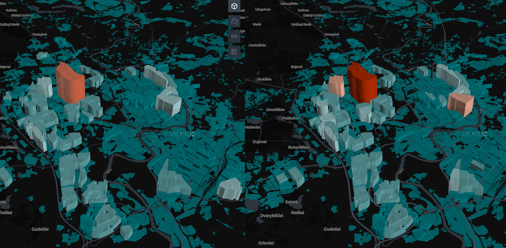
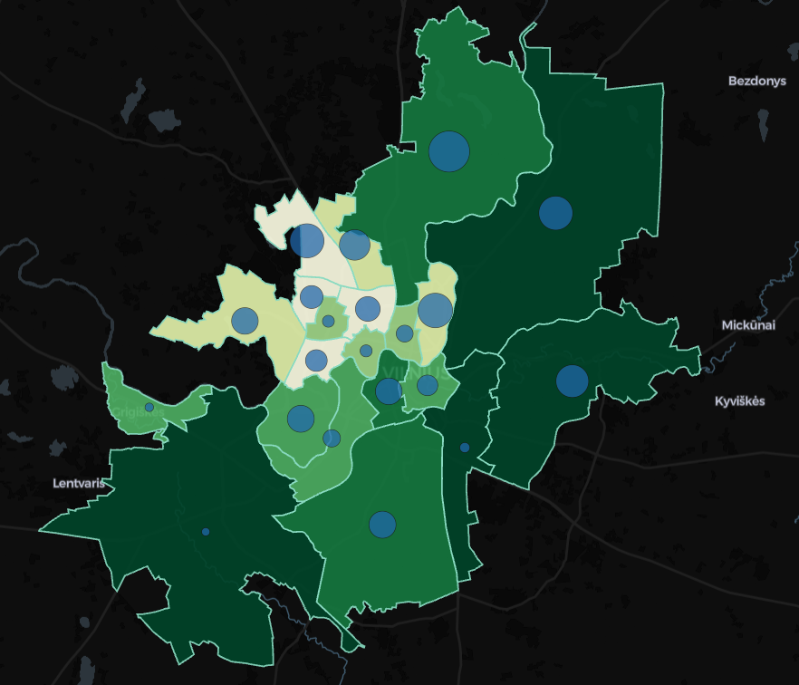
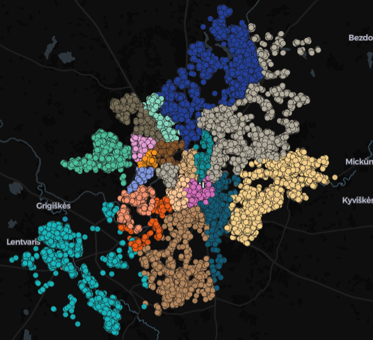
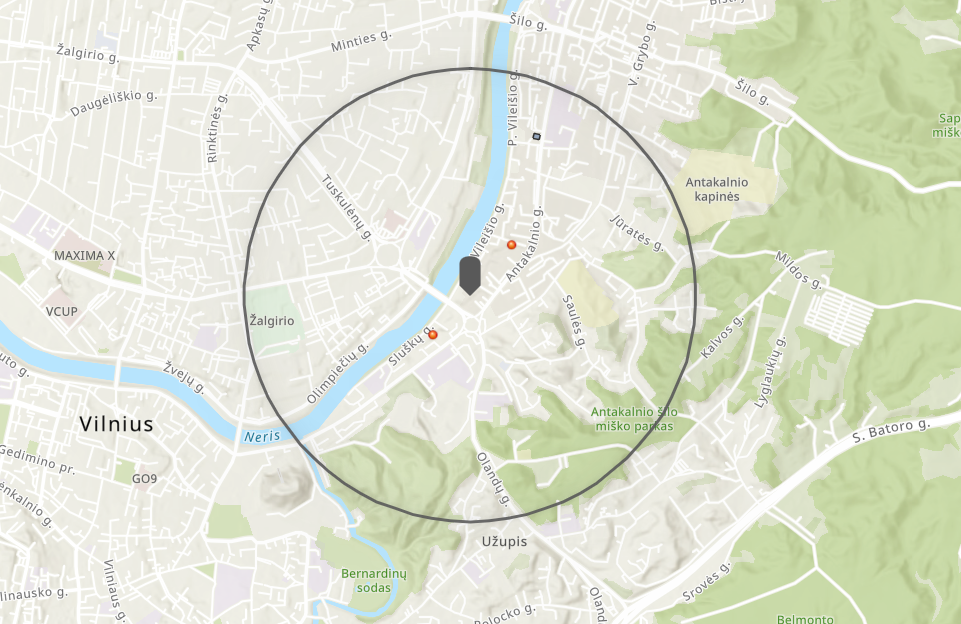
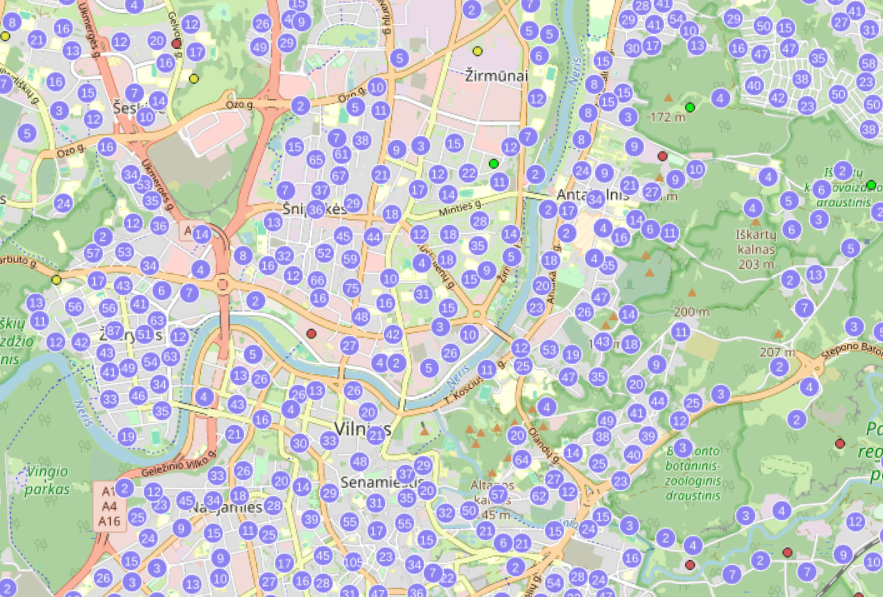
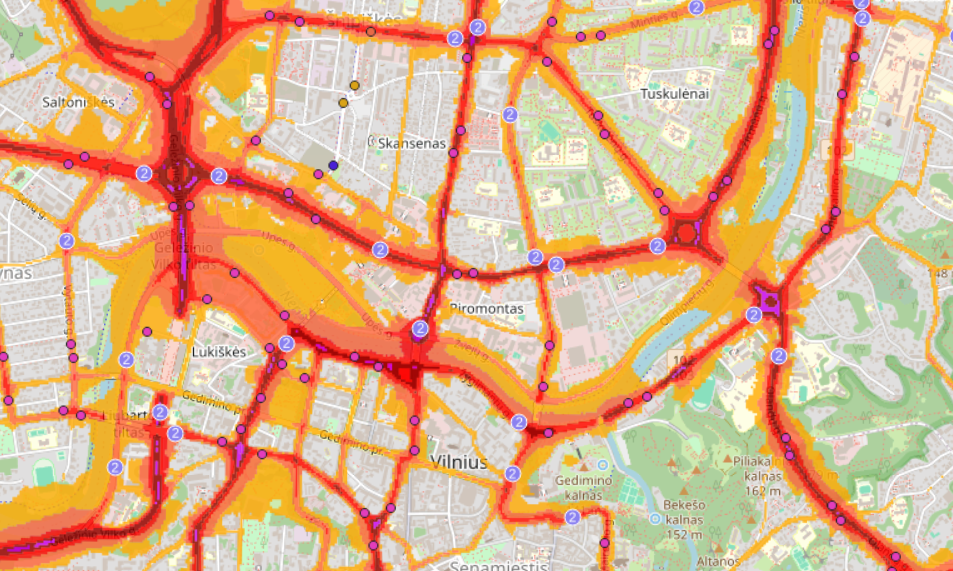

Vilniaus GIS
Interaktyvūs GIS žemėlapiai, GIS paslaugos ir erdviniai duomenys apie Vilniaus miestą.
ŽemėlapiaiŠioje svetainėje rasite interaktyvius GIS projektus, sukurtus naudojant kepler.gl, Geoportal WMS, QGIS, QGIS Cloud ir ArcGIS Online platformas. Svetainė yra sukurta mokymosi tikslais, kaip baigiamasis kurso „Interneto technologijos ir GIS“ projektas. Duomenys šioje svetainėje gali būti netikslūs ir yra naudojami tik demonstraciniais tikslais.
Interaktyvūs analitiniai žemėlapiai su duomenų vizualizacija.
WMS sluoksnių integracija naudojant QGIS Cloud ir teminiai žemėlapiai.
Instant App ir Survey123 aplikacijos duomenų peržiūrai ir rinkimui.
Vilniaus miesto interaktyvių žemėlapių paslaugos.
Interaktyvus žemėlapis vaizduojantis Vilniaus miesto gyventojų surašymo duomenis pagal pastatus.
Atidaryti žemėlapį

Interaktyvus žemėlapis vaizduojantis viešojo transporto prieinamumą pagal Vilniaus miesto seniūnijas.
Atidaryti žemėlapįInteraktyvus žemėlapis vaizduojantis Vilniaus miesto raidą, pastatų statybos metus pagal seniūnijas.
Atidaryti žemėlapį
Interaktyvus žemėlapis skirtas naujų nekilnojamo turto investicijų Vilniaus mieste vizualizavimui ir įvedimui.
Atidaryti žemėlapį

Vilniaus miesto gyvenamųjų pastatų žemėlapis su vandens telkinių apsaugos zonomis ir valstybinės reikšmės kelių duomenimis.
Atidaryti žemėlapįVilniaus miesto viešojo transporto stotelių žemėlapis su stotelių tipo ir kelių triukšmo lygio duomenimis.
Atidaryti žemėlapį
Jeigu turtite klausimų, pasiūlymų ar norite pasidalinti atsiliepimu apie svetainę, susisiekite.
Kontaktai